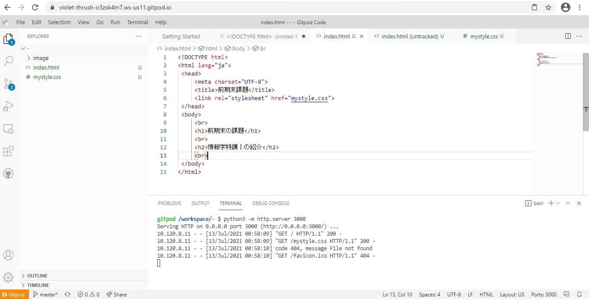

情報学特講Ⅰは、Cloud IDE（Gitpod)を使ったWeb開発を行います。
主に扱う言語は、CSS,HTML5,Java Scriptの3種類です。
これらの言語をマスターすると、就活のアドバンテージにもなり得ます。
IOTやDX、人工知能などのAIや５Gなど、目まぐるしくデジタル化が進んでいるということが背景にあるからでしょう。
つまり、、、情報学特講Ⅰは履修して損はない！！！ということです。（＊・ω・＊）b ｸﾞｯ
では、実際どのようにWeb開発をしているのかを少しばかり公開しちゃいます☆
下の画像は今、皆さんが見ているこのページを"Gitpod"を使って"HTML5"や"CSS"で作成しているところです。
...いかにも「プログラム」っぽい画面だと思います。
この画像を見て、「難しそうだ」と思った方、安心してください！
なんと先生がお手本を用意してくれてます！（笑）
、、、とは言っても、もちろんコピペは絶対にダメですよ！
最初は全く分からなくても、案外やっていくうちに分かってきます。
私も最初は先生が言ってることも、パソコンが教えてくれるエラーもさっぱりでした...。
しかし、"継続は力なり"です！
プロクラムに興味がある方はもちろん！これからのデジタル化の波に置いて行かれたくない方や、
就活でちょっとでも優位に立ちたい人には自信を持ってオススメする講義です！！